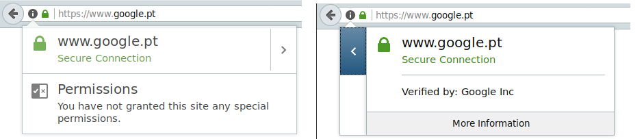
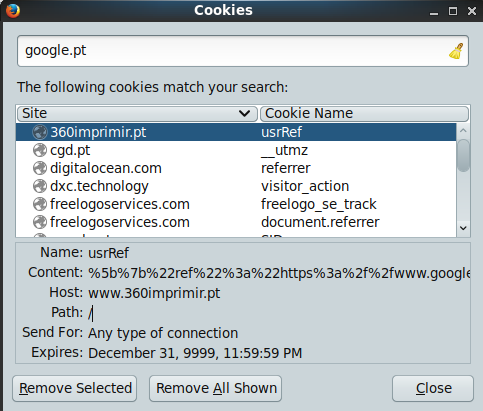
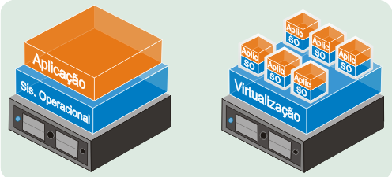

Diferentes tipos de Computadores
portatil
Um computador portátil (notebook ou laptop) é um computador pessoal transportável, que normalmente pesa 3 kg. São capazes de realizar a maioria das tarefas que executam os desktops, com capacidade similar e com a vantagem de redução de peso e tamanho. Têm a capacidade para funcionar durante um certo período de tempo sem estar ligado a uma tomada de energia eletrica. No entanto, muitos laptops não oferecem o conforto de um computador desktop, além de seus componentes de hardware são mais difíceis de substituir.
desktop
Os computadores desktop normalmente são modulares e seus componentes podem ser facilmente substituídos. Estes estão disponíveis em casa e empresas. Eles são usados para executar vários trabalhos, como manipular ficheiros, trabalhos de escritório, edição de vídeo e acesso à internet.
servidor
Um servidor é um computador que faz parte de uma rede e que fornece serviços a outros computadores, que recebem o nome de clientes. É sempre administrado remotamente e cada vez mais de uma forma simples e acessível. Um servidor dedicado está permanentemente em funcionamento e está ligado a uma ligação de alta velocidade, a uma empresa ou a um data center. A ele está sempre aliado um serviço de administração do servidor propriamente dito, para a manutenção e supervisionamento do mesmo.
hardware
Hardware é o conjunto dos componentes que compõem a parte física de um computador. Pode ser básico (os dispositivos necessários para iniciar o funcionamento de um computador) e complementar (os dispositivos que realizam funções específicas).
No que diz respeito aos tipos de hardware, constam os periféricos de entrada/input os periféricos de saída/output.
Interagir com o computador - Interface de utilizador
Durante muito tempo, computadores eram restritos a grandes empresas, laboratorios e instituicoes academicas. Só a partir do final da decada de 70, equipamentos domesticos passaram a ser fabricados e a surgir consumidores interessados.
Mesmo que um consumidor nao podesse compreender o funcionamento de um computador em sua totalidade era capaz de interagir com ele se existir um conjunto simplificado de instrucoes nas operacoes.
Esse conjunto simplificado de instrucoes é chamada de UI(user interface) a interface de utilizador. Traduz o comando que por sua vez gera informacoes que serao traduzidas pela interface para serem apresentadas ao utilizador. Existem muitos tipos de interface de utilizador. Pode ser um painel com botoes, e o resultado ser exibido a partir de luzes a piscar. É comum encontrar nos dias de hoje interfaces que identifica, o movimentos subetil de toques no ecra. a interface padrao é o modo texto. Mesmo que a mais utilizada seja a interface grafica devido ao uso de um ponteiro controlado por um dispositivo mouse sobre ilustracoes exibidas num ecra.
Terminal
A interface de utilizador em modo de texto é conhecida como terminal ou consola. Estes nomes vem da epoca em que existia um equipamento chamado terminal, que era ligado em rede para operar um computador. A consola era um ecra simples com fundo preto e letras brancas que exibia informacaoes em modo texto sobre o computador. tambem e comum se referir a interface de texto como a linha de comando.
Existe um programa chamado emulador de terminal que vai ser utilizado para trabalhar na linha de comando. A principal vantagem da linha de comando e sua simplicidade e versatilidade. O processo de execução é mais simples pois é necessario muito menos nıveis de traducao entre os comandos de texto e as instrucoes compreendidas pelo computador. Os comandos podem ser combinados entre si, permitindo um controle apurado e produzir resultados elaborados.
Estas caracteristicas tornam a linha de comando uma boa interface para um utilizador profissional. Enquanto uma interface grafica exige uma serie de programas adicionais e por vezes equipamentos mais complexos e caros, a consola é parte integrante de todo Unix e pode ser utilizado mesmo quando uma interface grafica nao esta disponıvel.
Contudo, existem tarefas onde programas com interfaces graficas sao mais apropriados.
E o caso do navegador de Internet(browser), que hoje é uma das principais interfaces de operacao de um computador para se navegar na internet. As paginas de Internet muitas vezes funcionam como aplicações, num ambiente chamado Web.
Browser - navegador de internet
Muitas atividades pessoais e profissionais sao desempenhadas no navegador de internet. Deve existir sempre alguns cuidados que devem ser tomados quando utilizando este ambiente. Os principais navegadores oferecem recursos para preservar a segurança e privacidade do utilizador.
- Mozzila Firefox
- Internet Explorer
- chromium
- Iceweasel
- midori
- opera
Privacidade
HTTPS - Ligação Segura

Quando utilizamos qualquer tipo de comunicacao em rede, existe sempre a possibilidade de que a informacao transmitida e recebida possa ser interceptada. Para evitar tal situação devemos verificar se o protocolo HTTPS (porta 443) esta selecionado no endereço da página. Assim, as informaçoes sao criptografadas e apenas a origem e o destino da comunicacao sao capazes de ler as informacoes. A ligação por HTTP (porta 80) nao é segura.
navegar sem rastos
Quando navegamos pela internet geramos um perfil pessoal que acaba por ser algo como: dados pessoais, passwords, historico de navegacao que sao armazenados nos browsers. Uma das formas dos websites criar um perfil do utilizador é com ficheiros de texto chamados de cookies. Uma boa alternativa ao utilizar outros computadores é navegar pelo modo invisivel ou fantasma. Que inicia uma sessao vazia e que reinicia apagado ficheiros gerados durante essa sessao.
para iniciar uma sessao anonima no firefox: ctrl+shift+p
ver cookies no firefox

Encriptacao de Conteudo
Um dos principais motivos de criptografia e manter os dados confidenciais e seguros. os computadores portateis sao frequentemente roubados e seu conteudo nao deve ser divulgado ou publicado. os servidores por outro lado geralmente nao sao roubados fisicamente mas tem informaçoes de utilizadores que nao deve ser acessiveis a qualquer pessoa.
É tambem possivel encriptar mensagens de email com Preety Good Privacy.
Sabias que encriptacao de ficheiros em alguns paises e proibida?
verifica as leis antes de encriptar!
Computadores nas Empresas
No computador desktop, o ideal é que o hardware e programas nao apresentem falhas. O software deve ser atualizado de maneira a manter os recursos mais recentes. Contudo, muitos dos recursos mais recentes nao foram exaustivamente testados, e podem causar alguma instabilidade que sera corrigida logo que detectada.
No computador servidor, tambem e desejado que estejam presentes os recursos mais recentes. Contudo, instabilidades devem ser completamente evitadas. Por exemplo, uma instabilidade que torne um servidor inacessıvel, mesmo que por alguns instantes, pode causar grandes prejuızos.
Existem distribuicoes de Linux dedicadas só para computador servidor. Nessas distribuicoes, como Debian, CentOS e Ubuntu Server, ha somente programas exaustivamente testados, o que praticamente elimina a ocorrencia de falhas. Apesar de serem programas com versoes estaveis, estao presentes todos os recursos mais avancados. Muitas empresas oferecem servicos de Virtualizacao e Computaçao em Nuvem(cloud) com esta distribuicoes.
Virtualizacao

Capacidade de executar simultaneamente mais de um sistema operativo no mesmo sistema operativo. Permite um melhor aproveitamento dos recursos da maquina e reduz custos. A presenca de muitos serviços, diferentes configurações e versoes de software por vezes a virtualizacao é a solucao para funcionar tudo dentro do mesmo computador sem criar problemas de compactibilidade. A virtualização usa um hypervisor para gerir o acesso aos recursos do sistema é um componente chave da computação em nuvem.
Cloud Computing/Computaçao em Nuvem
Significa uma infraestrutatura computacional geograficamente dispersa. Sao varios computadores de grande capacidade interligados pela internet. Podem estar espalhados em diferentes pontos geograficos para garantir segurança e disponiblidade dos serviços. O armazenamento de dados é feito em serviços que poderão ser executados em qualquer parte do mundo, a qualquer hora, não havendo necessidade de instalação de programas ou de armazenar dados localmente. O acesso a programas, serviços e ficheiros é remoto, através da Internet - referencia de simbolo grafico da "internet", à nuvem.